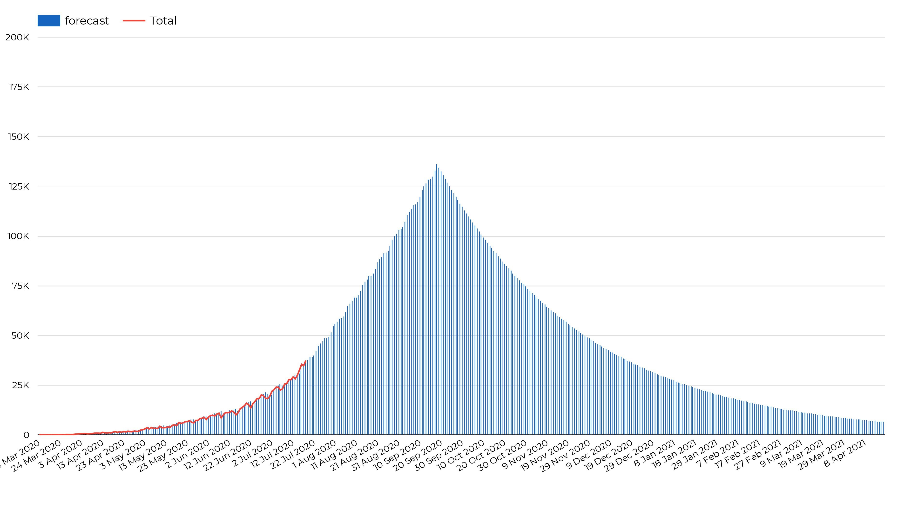
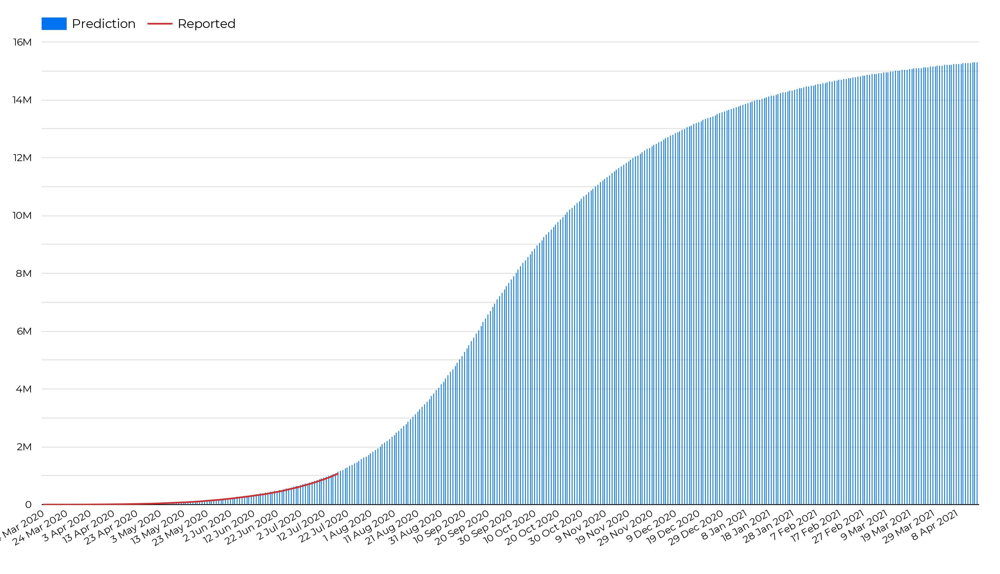

Country predictions
Indian daily prediction of Confirmed cases vs Actual daily Confirmed cases

The plot represents the number of confirmed cases per day(red) and it's prediction(blue)
The number of cases per day is predicted using the ARIMA model by using difference in number of cases reported per day in the period of 1 week
Prediction of Confirmed cases in India vs Reported Confirmed cases in India

The plot represents the number of confirmed cases till date(red) and it's prediction(blue)
The number of cases reported till date is calculated using the cummulative sum of the number of cases reported per day(from the previous graph)
Statewise predictions
State wise daily confirmed cases predictions
The plot represents the prediction of number of cases reported per day in each state
State wise total confirmed cases predictions
The plot represents the prediction of number of cases reported till date in each state
Peak Cases VS Population Density

The plot shows the relation between the peak number of cases reported so far per Crore and population density.
In this plot the population of the country is represented by the size of the points, the level of lockdown is represented by the colour and the shapes represent the countries.
This was used to estimate the peak number of cases at which the decline of cases starts.